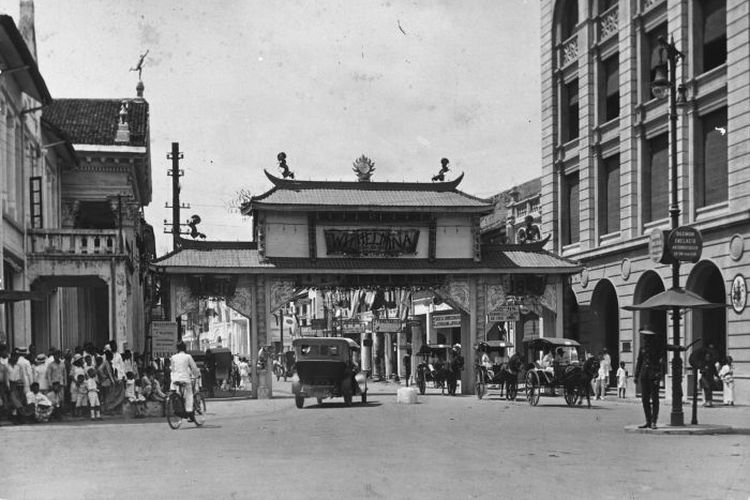

Sejarah

Medan berasal dari bahasa Tamil Maidhan atau Maidhanam, yang berarti tanah lapang atau tempat yang luas, yang kemuadian teradopsi ke Bahasa Melayu. Medan ibu kota provinsi Sumatera Utara, Indonesia, merupakan kota terbesar keempat di Indonesia setelah DKI Jakarta, Surabaya dan Bandung serta kota terbesar di luar pulau jawa.
Sejarah Kota Medan Bermula dari sebuah kampung yang didirika oleh Guru Patimpus di pertemuan Sungai Deli dan Sungai Babura. Hari jadi Kota Medan ditepatkan pada 1 Juli 1590.
Selanjutnya pada tahun 1632, Medan dijadikan pusat pemerintahan Kesultanan Deli, sebuah kerajaan Melayu.
Bangsa Eropa mulai menemukan Medan sejak kedatangan Jhon Anderson dari Inggris pada tahun 1823.
Peradaban di Medan terus berkembang hingga pemerintah Hindia Belanda memberikan status kota pada 1 April 1909 dan menjadikannya pusat pemerintahan di luuar Jawa, terutama setelah pemerintah kolonial membuka perusahaan perkebunan secara besar-besaran.
Geografis
Kota Medan memiliki luas 26.510 hektare (265,10 km²) atau 3,6% dari keseluruhan wilayah Sumatra Utara. Dengan demikian,
dibandingkan dengan kota/kabupaten lainya, Medan memiliki luas wilayah yang relatif kecil dengan jumlah penduduk yang relatif besar.
Secara geografis kota Medan terletak pada 3° 30' - 3° 43' Lintang Utara dan 98° 35' - 98° 44' Bujur Timur.
Untuk itu topografi kota Medan cenderung miring ke utara dan berada pada ketinggian 2,5 - 37,5 meter di atas permukaan laut.
Destinasi
Wisata Medan sangat banyak pilihannya, mulai dari wisata alam, wisata edukasi, dan tempat wisata lainnya.
Khusus untuk Anda kami akan memberikan daftar tempat wisata yang ada di Medan dari yang biasa sampai yang terpopuler. Tempat wisata ini bisa Anda jadikan rekomendasi ketika akan berlibur ke Medan.
Ada banyak tempat wisata yang ada di Medan, seperti wisata alam, museum, dan yang lainnya. Khusus untuk Anda akan kami berikan daftar lengkap wisata Medan di sini.
Istana Maimun
Salah satu ikon Kota Medan adalah Istana Maimun yang ada di pusat Kota Medan. Istana ini dibangun pada tahun 1898 atas perintah Sultan Ma’moen Al Rasyid yang merupakan Sultan Deli pada waktu itu.
Anda yang datang ke Kota Medan wajib untuk mengunjungi istana ini. Di sini Anda bisa melihat peninggalan kebudayaan Kesultanan Deli. Ada banyak juga spot-spot menarik yang bisa Anda abadikan di sini.
Salah satu koleksi terkenal di istana ini adalah Meriam Puntung. Meriam ini sangat legendaris dan terkenal mistis di kalangan masyarakat Medan. Biasanya disekitar tempat wisata populer di medan ini banyak pedagang oleh-oleh khas Medan.
Rahmat International Wildlife Museum & Gallery
Bingung membawa anak berwisata di Medan? Anda bisa mengunjungi Rahmat International Wildlife Museum & Gallery.
Museum yang didirikan oleh Dr H. Rahmadsyah ini merupakan museum binatang liar. Binatang-binatang liar yang sudah diawetkan dipajang di dalam museum ini. Di sini anak-anak akan diajak belajar mengenal hewan liar dan cara merawat hewan yang benar.
Harga tiket masuk ke museum ini adalah Rp 50.000 per orang. Untuk anak-aak di bawah 2 tahun tiket masuknya gratis.
Taman Buaya Asam Kumbang
Taman Buaya Asam Kumbang merupakan taman penangkaran reptil buaya terbesar di Indonesia. Taman yang memiliki luas dua hektar ini bahkan menjadi taman buaya terbesar di Asia Tenggara. Di sini ada sekitar dua ribu lima ratus buaya dengan berbagai ukuran, termasuk buaya yang telah berumur empat puluh tahun lebih.
Terletak di Jalan Bunga Raya Kecamatan Medan Selayang No.59 Desa Asam Kumbang, lima kilometer dari pusat Kota Medan, Taman Buaya ini berawal dari hobi Lo Tham Muk, warga lokal pada tahun 1959 akan hewan reptil. Saat ini kebutuhan makan dari buaya-buaya itu menghabiskan setidaknya satu ton bebek atau ayam.